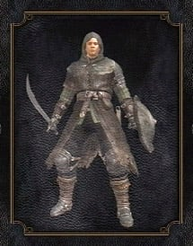
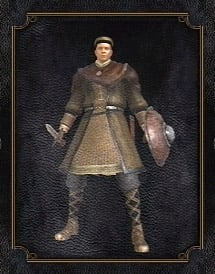

Classes em Dark Souls determinam seus stats e equipamentos inicais. Há 10 Classes que o jogador pode escolher para começar o jogo. Elas estão listadas abaixo:
Classes não determinam quais armas, itens, armaduras ou feitiços seu personagem pode usar;
elas apenas determinam com o que seu personagem começa o jogo. Conforme você progride no jogo e aumenta seus níveis, seu personagem pode potencialmente assumir qualquer papel,
independentemente da classe.
Além de escolher uma classe, os jogadores podem escolher uma benção para começar o jogo.
Todos as benções podem ser encontrados no jogo posteriormente, mas escolher um aqui pode permitir que o jogador desfrute de um benefício que normalmente
não teria até muito mais tarde. Um jogador de primeira viagem deve ter cuidado ao escolher benções que permitam entrar em áreas de final de jogo desde o início,
como a Chave Mestra, pois isso pode levá-lo a ficar preso em uma área muito difícil sem o conhecimento ou equipamento para sair. Vale lembrar que a Chave Mestra pode ser usada
infinitamente e que a classe inicial Ladrão já começa o jogo com uma. Escolher uma segunda Chave Mestra como Ladrão é um desperdício de benção.
Guerreiro
Cavaleiro
Viajante
Ladrão
Bandido
Caçador

Feiticeiro
Piromante

Clérigo
Depravado